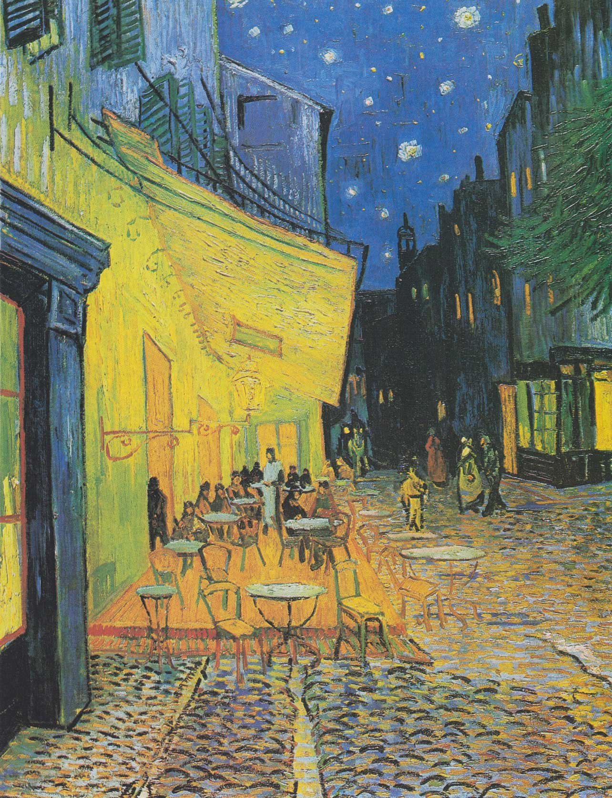

Getting to Know Me
I chose one of my favorite paintings by Vincent van Gogh because what I consider to be design is something that was done research on, sketched, planned and has gone through an entire process. Van Gogh painted Café Terrace at Night on site and in the moment. That's why I consider it to be so fantastic, since its a painting done so quickly, that became a priceless work of art.
